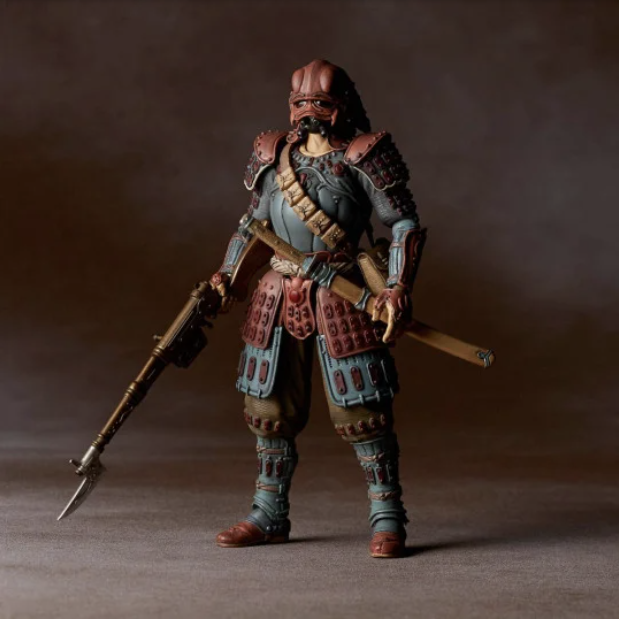

Description
Le projet KT Revoltech Dorok Soldier est une figurine d'action produite par Kaiyodo, basée sur le personnage de la célèbre série de manga et d'anime japonaise "Nausicaä de la Vallée du Vent". Le Dorok Soldier est une créature humanoïde qui sert d'un des antagonistes de la série. La figurine est livrée avec divers accessoires, notamment une lance et un bouclier, ainsi que des mains et des plaques de visage interchangeables. Le Dorok Soldier est également conçu pour être compatible avec d'autres figurines de la gamme Revoltech, permettant des affichages dynamiques et des combats entre personnages de la série Nausicaä et au-delà.